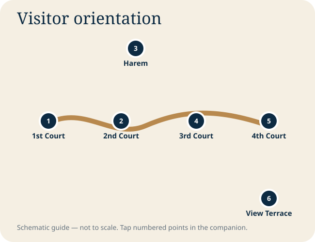

Istanbul chapters
Field guide
Courtyard-by-courtyard route
Transition from the city into the palace precinct; orient yourself before ticketed sections.
Administrative heart, kitchens and the decision point for the Harem.
More restricted imperial spaces; prioritize Treasury displays and audience-related rooms.
Pavilions, terraces and the most rewarding Bosphorus and Golden Horn viewpoints.
Choose your visit length
Main courts, selected Treasury highlights and the Fourth Court views. Skip the Harem unless it is your highest priority.
Add the Harem or a deeper visit to kitchens and collections, but not every gallery.
A broad visit with Harem, collections, pauses and gardens. Heat and museum fatigue become major factors.
Focus on the courts, architecture and terraces; let the setting carry the visit.
Do not miss
- The progressive tightening from public to private court
- Selected Treasury craftsmanship rather than every object label
- Tile work and domestic scale inside the Harem, when included
- Fourth Court terraces and water views
Tap to explore the visitor sequence
Tap a numbered point for its label. Tap the expand button for a full-screen pan-and-zoom view.

Visual gallery
Photography is sourced and credited on the Photo Credits page. Operational access, prayer arrangements and ticket procedures can change; confirm locally.